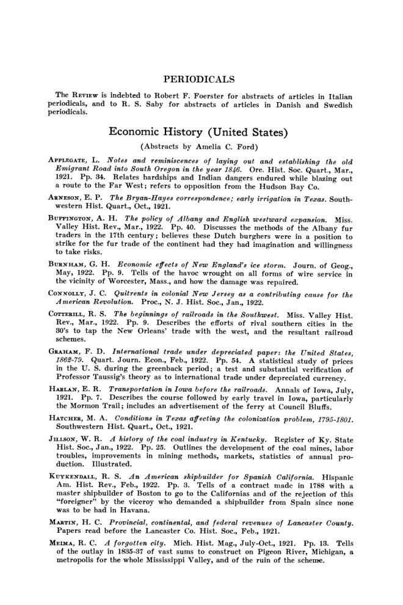

Adams, o crédito, a Rússia que compra e o circuito do dinheiro
Leitura: 11 min
Um memorial a Henry Carter Adams; Youngman questiona o poder da taxa de redesconto; Taylor vê na Rússia um comprador perdido; Foster mede o tempo que o dólar leva para voltar ao consumidor.


Em 22 de fevereiro de 1922, aniversário de Washington, o Dr. F. Chang, da delegação chinesa à conferência de armamentos de Washington, instalou um monumento sobre um túmulo em Ann Arbor: um pedestal de mármore em forma da tartaruga sagrada da China, que sustenta uma lápide com inscrição em chinês de um lado e em inglês do outro. O túmulo era de Henry Carter Adams, ex-presidente da American Economic Association, morto em 11 de agosto de 1921. O monumento era um presente do Ministério das Comunicações chinês. A cena, reproduzida do Michigan Alumnus, fecha o memorial que abre o número de setembro de 1922 da American Economic Review.
O resto da edição trata de dinheiro e crédito vistos de três ângulos. Anna Youngman pergunta se um banco central pode de fato dirigir o crédito e conclui que o poder da taxa de redesconto foi exagerado. Alonzo Englebert Taylor, do Food Research Institute da Stanford University, sustenta que o mundo sente falta da Rússia mais como compradora do que como fornecedora. William T. Foster propõe medir quanto tempo um dólar leva para sair das mãos de um consumidor e voltar às de outro, e liga essa velocidade às oscilações dos negócios. Completam o número resenhas, listas de livros novos, resumos de periódicos, documentos oficiais e notas.
Quem foi Henry Carter Adams?
J. H. Hollander, R. T. Ely, E. R. A. Seligman e outros · “Memorial to Former President Henry C. Adams” · pp. 401–416
O memorial reúne as falas de um encontro de amigos de Adams durante a reunião anual da associação em Pittsburgh, em 29 de dezembro de 1921, presidido por Jacob H. Hollander. Falaram também R. T. Ely, E. R. A. Seligman, C. H. Cooley, F. H. Dixon, D. Friday, I. L. Sharfman, J. B. Clark e F. H. Giddings.
Pelo relato de Seligman, Adams nasceu no Iowa em 31 de dezembro de 1851, filho de Ephraim Adams, um dos estudantes de teologia de Andover que foram para o Iowa em 1842 e ajudaram a fundar o Grinnell College. Destinado ao ministério, formou-se em Grinnell em 1874 e entrou no seminário de Andover em 1875, mas voltou-se para a economia como caminho para a reforma ética. Foi um dos dez escolhidos, entre mais de trezentos candidatos, para as bolsas da nova Johns Hopkins, onde recebeu em 1878 o primeiro doutorado concedido pela universidade. Estudou depois em Oxford, Paris, Berlim e Heidelberg.
Lecionou em Cornell, na Johns Hopkins e em Michigan. Em 1886, uma palestra sobre a greve ferroviária de Gould, relatada de forma distorcida pelos jornais, levou Henry Sage, benfeitor de Cornell, a pedir sua saída; o reitor Angell o chamou então para a University of Michigan, onde ficou. Na obra escrita, Seligman destaca a tese sobre a tributação nos Estados Unidos de 1789 a 1816, o livro Public Debts, de 1887, e The Science of Finance, o primeiro tratado americano sobre finanças públicas. Ely lembra a monografia “Relation of the State to Industrial Action”, preparada para o primeiro volume da associação.
Dixon descreve esse trabalho como a parte mais duradoura da carreira. Antes de 1906, a Suprema Corte entendera que a lei não previa meio de obrigar as ferrovias a apresentar os relatórios, e cada empresa escriturava à sua maneira. De 1913 a 1917, Adams assessorou o governo chinês na unificação da contabilidade das ferrovias estatais, o que explica a lápide de Ann Arbor. Clark o descreve como fundador da associação, seu primeiro vice-presidente e, cedo, seu presidente.
“Elevar o nível da concorrência a um nível mais alto.” (“to raise the level of competition to a higher level.”)
A taxa de redesconto controla o crédito?
Anna Youngman · “A Popular Theory of Credit Applied to Credit Policy” · pp. 417–446
Anna Youngman parte de um artigo seu publicado na revista em setembro de 1921 sobre a eficácia das taxas de desconto dos bancos do Federal Reserve. Desde então, diz, acumulou-se evidência de que as taxas cobradas pelos bancos de reserva aos bancos-membros pouco se ligam às que estes cobram de seus clientes. Em partes do país, 8%, 10% ou 12% são taxas costumeiras, que nem a alta nem a queda do redesconto alteraram.
A pergunta de fundo é teórica: os bancos são agentes passivos ou instituições formativas? A autora adota a definição que chama de popular, a de banqueiros e homens de negócios: capital e crédito são a mesma coisa, o poder de compra que os bancos alugam aos tomadores, e o juro é o preço desse aluguel. Aponta H. J. Davenport e Schumpeter como defensores consistentes dessa linha e critica Gustav Cassel, cuja taxa “verdadeira” de juros, segundo ela, só pode ser alcançada por definição. Compara o sistema bancário centralizado a um monopolista: controla a oferta, mas não pode fixar o preço sem olhar a demanda.
Daí três teses. Crédito de longo e de curto prazo é, em essência, o mesmo, e nenhum tipo é por si mais inflacionário que outro; a inflação vem da expansão total do poder de compra num ritmo maior que o necessário para absorver bens e serviços a preços correntes. A política de crédito deve, portanto, abranger também o mercado de investimentos, e os bancos de reserva deveriam poder emprestar contra ações e títulos e ampliar as operações de mercado aberto. E a força das mudanças de taxa foi exagerada: um banco de redesconto que cobra menos que os bancos-membros só controla o crédito, na expansão, por racionamento.
A autora pede ainda que qualquer agência nova de crédito agrícola siga a política do sistema de reserva, e rejeita guias mecânicos como a estabilização do nível de preços, as reservas legais e os movimentos de ouro. O que falta, conclui, é conhecimento melhor dos fatos da indústria e dos mercados.
“Prevenção pelo conhecimento, e não socorro depois do desastre, é a meta de uma política de crédito bem-sucedida.” (“Prevention through knowledge—not succor following disaster—is the goal of a successful credit policy.”)
O mundo sente falta da Rússia como vendedora ou como compradora?
Alonzo Englebert Taylor (Food Research Institute, Stanford University) · “The Commercial Importance of Russia” · pp. 447–459
Taylor anuncia a conclusão logo no início: as mercadorias russas importavam ao mundo mais como expressão de poder de compra do que por suas qualidades físicas. Os produtos que a Rússia exportava antes da guerra podiam ser obtidos em outros lugares; as relações de troca que eles sustentavam, não. O colapso da indústria e dos transportes russos, diz o autor, foi subestimado, e o significado econômico da fome, superestimado.
O ponto de partida é a Europa de antes da guerra, tomada como um grande importador de alimentos, rações e matérias-primas, abastecido pela Rússia e pelos países de ultramar. O que esses fornecedores vendiam, argumenta Taylor, refletia menos sua capacidade de produzir do que a capacidade de consumo da Europa. A Rússia, como Canadá, Argentina e Austrália, estava no estágio extrativo: exportava matérias-primas, importava sobretudo manufaturas e usava o saldo comercial para pagar os encargos do capital estrangeiro.
Produto por produto, o autor mostra que a substituição foi fácil. Os cereais, mais da metade do valor exportado, foram cobertos pelo ultramar: os Estados Unidos, sozinhos, assumiram dois terços das cerca de 5 milhões de toneladas de cereais panificáveis que a Rússia exportava. Oleaginosas tropicais, linho substituído por algodão, juta e cânhamo, manganês do Brasil e da Índia, platina de novas jazidas: nada disso, a seu ver, era essencial a ponto de causar uma catástrofe.
O que não se substitui é o comprador. A Rússia pagava seus cereais com mercadorias que a Europa estava equipada para produzir; os exportadores de ultramar, de padrão de vida alto, querem ser pagos em ouro e não absorvem de repente mais manufaturas europeias. A conclusão de Taylor é que a Rússia foi facilmente substituída como produtora e é, em boa medida, insubstituível como consumidora.
Quanto tempo um dólar leva para voltar ao consumidor?
William T. Foster · “The Circuit Flow of Money” · pp. 460–473
Foster distingue a velocidade da moeda, a frequência com que ela é usada para qualquer fim, de outra grandeza que chama de velocidade de circuito: a frequência com que o dinheiro volta de um gasto em bens de consumo novos para outro gasto em bens de consumo novos. Bens e dinheiro andam em sentidos opostos; os bens, ao chegar ao consumidor, saem da corrente, mas o dinheiro segue, do varejo ao atacado, à fábrica, ao produtor de matéria-prima e, sobretudo como pagamento por serviços pessoais, de volta ao consumidor.
A distinção importa porque, para o autor, os períodos de grande perturbação dos negócios rompem a proporção entre as duas velocidades. Se as pessoas gastarem menos em bens novos e mais em outras transações, a quantidade e a velocidade geral da moeda podem ficar iguais e, ainda assim, a velocidade de circuito cai e o comércio sente. Para alguns fins, por isso, Foster propõe uma equação de trocas restrita às vendas de bens de consumo novos.
Com um diagrama de reservatórios e canos, inspirado num desenho de M. C. Rorty, o autor mostra o fundo dos consumidores, alimentado em cerca de 70% por rendas de serviços pessoais. Admite os defeitos do desenho, que omite os bancos e o governo, ambos capazes de criar e extinguir moeda, e lista onze condições que aceleram o circuito, como salários maiores, impostos menores, expectativa de alta de preços e pagamentos mais frequentes.
A conclusão é um programa de pesquisa. A surpresa com a sustentação das vendas no varejo na depressão de 1921 mostraria quão pouco se sabe; com registros melhores, diz Foster, talvez não tivessem ocorrido nem a expansão extrema de 1919 nem a contração que se seguiu.
“Só as mudanças contam.” (“Only changes count.”)
O que mais há na edição?
As resenhas cobrem a terceira edição revista do segundo volume dos Principles of Economics de Frank W. Taussig, por C. E. Persons; dois livros de finanças internacionais do pós-guerra, de Elisha M. Friedman e de John Foster Bass e Harold Glenn Moulton, por W. F. Gephart; The Stock Market, de S. S. Huebner, e The Work of the Stock Exchange, de J. Edward Meeker; Electrical Rates, de G. P. Watkins; The Human Factor in Business, de B. Seebohm Rowntree; The World's Monetary Problems, de Gustav Cassel; dois livros sobre imigração, por Henry Pratt Fairchild; e Wealth and Taxable Capacity, de Sir Josiah Stamp, por Willford I. King. Rufus S. Tucker comenta o relatório de uma comissão legislativa de Nova York sobre tributação, e as notas registram novos sócios, prêmios e centros de pesquisa de negócios.
Na minha leitura
Na minha leitura, os três artigos discutem a mesma coisa por lados diferentes: a moeda e o crédito não são um véu neutro sobre a produção. Youngman trata o crédito como mercadoria cuja oferta depende de decisão, e o banco central como um monopolista que precisa testar a demanda. Taylor mostra que o comércio é uma rede de pagamentos, e que retirar um comprador desfaz trocas que nenhum fornecedor alternativo recompõe. Foster sugere que importa menos quanto dinheiro existe e mais por onde e com que rapidez ele passa.
O ponto comum é também uma confissão de ignorância estatística. Youngman pede estudo de mercados, e não apenas de produção; Taylor avisa que seus saldos comerciais são aproximados; Foster chama de ilustração a própria estimativa. A homenagem a Adams, que fez da estatística ferroviária uniforme a base da regulação, cabe bem nesse número.
Glossário
- Taxa de redesconto
- juro que o banco central cobra ao emprestar a bancos contra títulos que estes já descontaram.
- Operações de mercado aberto
- compra e venda de títulos pelo banco central diretamente no mercado, para alterar a oferta de crédito.
- Velocidade de circuito
- na definição de Foster, quantas vezes por ano o dinheiro volta de um gasto em bens de consumo novos a outro.
- Balança comercial
- diferença entre o valor das exportações e o das importações de mercadorias.
- Contabilidade uniforme
- plano de contas único imposto pelo regulador a todas as empresas de um setor.
Artigos (4)
- Memorial to Former President Henry C. Adams — J. H. Hollander, R. T. Ely, E. R. A. Seligman, C. H. Cooley, F. H. Dixon, D. Friday, I. L. Sharfman, J. B. Clark e F. H. Giddings (pp. 401–416) · resenha acima · JSTOR
- A Popular Theory of Credit Applied to Credit Policy — Anna Youngman (pp. 417–446) · resenha acima · JSTOR
- The Commercial Importance of Russia — Alonzo Englebert Taylor (Food Research Institute, Stanford University) (pp. 447–459) · resenha acima · comentário completo · JSTOR
- The Circuit Flow of Money — William T. Foster (pp. 460–473) · resenha acima · comentário completo · JSTOR
Resenhas (14)
- Frank W. Taussig, Principles of Economics, vol. II (3ª ed. revista) — C. E. Persons (Boston University) (pp. 474–475). Nova edição revista do segundo volume do manual de Taussig. JSTOR
- Oskar Engländer, Bestimmungsgründe des Preises — O. Fred Boucke (pp. 475–476). Estudo sobre os fatores determinantes do preço, de interesse para quem estuda a ascensão e o declínio do marginalismo. JSTOR
- Elisha M. Friedman, International Finance and Its Reorganization — W. F. Gephart (pp. 478–479). História financeira da Guerra Mundial e da reorganização das finanças internacionais. JSTOR
- John Foster Bass e Harold Glenn Moulton, America and the Balance Sheet of Europe — W. F. Gephart (Washington University) (pp. 479–480). Os Estados Unidos diante dos problemas econômicos da Europa do pós-guerra. JSTOR
- R. A. Lehfeldt, The National Resources of South Africa — Willford I. King (pp. 487–488). Panorama dos recursos da África do Sul, com prefácio de J. C. Smuts. JSTOR
- Thomas Temple Hoyne, Speculation: Its Sound Principles and Rules for Its Practice — James E. Boyle (Cornell University) (pp. 497–498). Teoria e prática da especulação organizada. JSTOR
- S. S. Huebner, The Stock Market; J. Edward Meeker, The Work of the Stock Exchange — Walter E. Lagerquist (Northwestern University) (pp. 499–501). Dois livros sobre o mercado de ações e o funcionamento da bolsa. JSTOR
- G. P. Watkins, Electrical Rates — John Bauer (New York City) (pp. 501–504). Estudo sobre tarifas de energia elétrica. JSTOR
- B. Seebohm Rowntree, The Human Factor in Business — D. A. McCabe (Princeton University) (pp. 510–511). Livro sobre o fator humano na gestão das empresas. JSTOR
- H. Parker Willis e George W. Edwards, Banking and Business — George W. Dowrie (The University of Minnesota) (pp. 514–515). Manual sobre bancos e suas relações com os negócios. JSTOR
- Gustav Cassel, The World's Monetary Problems — N. R. Whitney (University of Cincinnati) (pp. 515–517). Os problemas monetários mundiais do pós-guerra segundo Cassel. JSTOR
- Jeremiah W. Jenks e W. Jett Lauck, The Immigration Problem; Isaac A. Hourwich, Immigration and Labor — Henry Pratt Fairchild (New York University) (pp. 523–524). Dois livros sobre a imigração europeia para os Estados Unidos e seus efeitos sobre o trabalho. JSTOR
- Rudolf Eucken, Socialism: an Analysis — G. B. L. Arner (pp. 530). Análise do socialismo pelo filósofo alemão, em tradução de Joseph McCabe. JSTOR
- Sir Josiah Stamp, Wealth and Taxable Capacity — Willford I. King (National Bureau of Economic Research) (pp. 531–533). Estudo sobre riqueza, renda e capacidade contributiva, com estatísticas do Reino Unido. JSTOR
Novos livros (15)
- New Books (pp. 476–477). Lista de livros novos: obras gerais, teoria e sua história. JSTOR
- New Books (pp. 481–487). Lista de livros novos: história e geografia econômica. JSTOR
- New Books (pp. 488–491). Lista de livros novos: agricultura, mineração, silvicultura e pesca. JSTOR
- New Books (pp. 491–494). Lista de livros novos: indústrias manufatureiras, transportes e comunicações. JSTOR
- New Books (pp. 494–496). Lista de livros novos: comércio e crises comerciais. JSTOR
- New Books (pp. 504–509). Lista de livros novos: contabilidade, métodos de negócios, investimentos e bolsas. JSTOR
- New Books (pp. 509–510). Lista de livros novos: capital e organização capitalista. JSTOR
- New Books (pp. 511–513). Lista de livros novos: trabalho e organizações de trabalhadores. JSTOR
- New Books (pp. 517–520). Lista de livros novos: moeda, preços, crédito e bancos. JSTOR
- New Books (pp. 520–523). Lista de livros novos: finanças públicas, tributação e tarifa. JSTOR
- New Books (pp. 525). Lista de livros novos: população e migração. JSTOR
- New Books (pp. 525–529). Lista de livros novos: problemas sociais e reformas. JSTOR
- New Books (pp. 529–530). Lista de livros novos: seguros e pensões. JSTOR
- New Books (pp. 530–531). Lista de livros novos: socialismo e empresas cooperativas. JSTOR
- New Books (pp. 533–535). Lista de livros novos: estatística e seus métodos. JSTOR
Documentos, periódicos e notas (3)
- Periodicals (pp. 536–563). Resumos de artigos de periódicos, por área. JSTOR
- Documents, Reports and Legislation — Rufus S. Tucker (pp. 564–568). Publicações da Tariff Commission e da Federal Trade Commission e o relatório da comissão legislativa de Nova York sobre tributação e corte de gastos. JSTOR
- Notes (pp. 569–576). Novos sócios da associação, prêmios, centros de pesquisa de negócios e notícias de economistas. JSTOR
Fontes
- Memorial to Former President Henry C. Adams (pp. 401–416). JSTOR · Internet Archive (PDF)
- A Popular Theory of Credit Applied to Credit Policy (pp. 417–446). JSTOR · Internet Archive (PDF)
- The Commercial Importance of Russia (pp. 447–459). JSTOR · Internet Archive (PDF)
- The Circuit Flow of Money (pp. 460–473). JSTOR · Internet Archive (PDF)
- [untitled] The American Economic Review, (1922-09-01), pages 474-475 (pp. 474–475). JSTOR · Internet Archive (PDF)
- [untitled] The American Economic Review, (1922-09-01), pages 475-476 (pp. 475–476). JSTOR · Internet Archive (PDF)
- New Books (pp. 476–477). JSTOR · Internet Archive (PDF)
- [untitled] The American Economic Review, (1922-09-01), pages 478-479 (pp. 478–479). JSTOR · Internet Archive (PDF)
- [untitled] The American Economic Review, (1922-09-01), pages 479-480 (pp. 479–480). JSTOR · Internet Archive (PDF)
- New Books (pp. 481–487). JSTOR · Internet Archive (PDF)
- [untitled] The American Economic Review, (1922-09-01), pages 487-488 (pp. 487–488). JSTOR · Internet Archive (PDF)
- New Books (pp. 488–491). JSTOR · Internet Archive (PDF)
- New Books (pp. 491–494). JSTOR · Internet Archive (PDF)
- New Books (pp. 494–496). JSTOR · Internet Archive (PDF)
- [untitled] The American Economic Review, (1922-09-01), pages 497-498 (pp. 497–498). JSTOR · Internet Archive (PDF)
- [untitled] The American Economic Review, (1922-09-01), pages 499-501 (pp. 499–501). JSTOR · Internet Archive (PDF)
- [untitled] The American Economic Review, (1922-09-01), pages 501-504 (pp. 501–504). JSTOR · Internet Archive (PDF)
- New Books (pp. 504–509). JSTOR · Internet Archive (PDF)
- New Books (pp. 509–510). JSTOR · Internet Archive (PDF)
- [untitled] The American Economic Review, (1922-09-01), pages 510-511 (pp. 510–511). JSTOR · Internet Archive (PDF)
- New Books (pp. 511–513). JSTOR · Internet Archive (PDF)
- [untitled] The American Economic Review, (1922-09-01), pages 514-515 (pp. 514–515). JSTOR · Internet Archive (PDF)
- [untitled] The American Economic Review, (1922-09-01), pages 515-517 (pp. 515–517). JSTOR · Internet Archive (PDF)
- New Books (pp. 517–520). JSTOR · Internet Archive (PDF)
- New Books (pp. 520–523). JSTOR · Internet Archive (PDF)
- [untitled] The American Economic Review, (1922-09-01), pages 523-524 (pp. 523–524). JSTOR · Internet Archive (PDF)
- New Books (pp. 525). JSTOR · Internet Archive (PDF)
- New Books (pp. 525–529). JSTOR · Internet Archive (PDF)
- New Books (pp. 529–530). JSTOR · Internet Archive (PDF)
- [untitled] The American Economic Review (1922-09-01), page 530 (pp. 530). JSTOR · Internet Archive (PDF)
- New Books (pp. 530–531). JSTOR · Internet Archive (PDF)
- [untitled] The American Economic Review, (1922-09-01), pages 531-533 (pp. 531–533). JSTOR · Internet Archive (PDF)
- New Books (pp. 533–535). JSTOR · Internet Archive (PDF)
- Periodicals (pp. 536–563). JSTOR · Internet Archive (PDF)
- Documents, Reports and Legislation (pp. 564–568). JSTOR · Internet Archive (PDF)
- Notes (pp. 569–576). JSTOR · Internet Archive (PDF)
- Sumário da edição no JSTOR: The American Economic Review, vol. 12, nº 3.
Documento em domínio público (EUA, publicado antes de 1931), via JSTOR Early Journal Content e Internet Archive. Resumo e comentário do autor deste site, sem afiliação com a American Economic Association. Encontrou um erro? Escreva: a correção é publicada no próprio texto, com data.
← Nº 177 · Manual de 1922: New Haven, seiscentos assinantes e Viena de volta Nº 179 · Nourse, as cooperativas, a crise da teoria e a base tarifária →